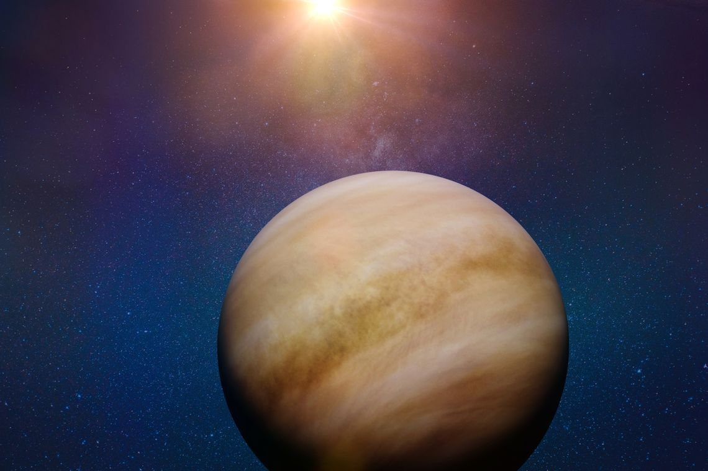
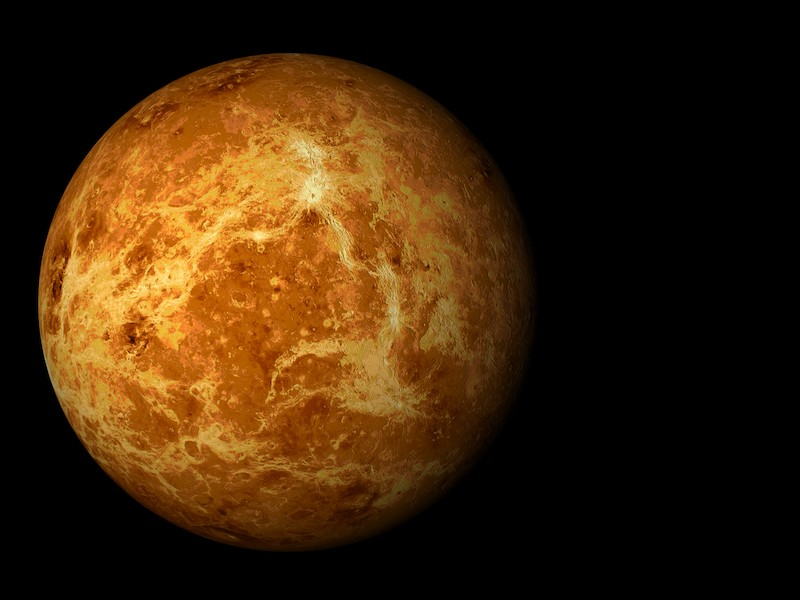

Es el segundo planeta más próximo al Sol y el más cercano a la Tierra; tanto, que es posible verlo a simple vista desde la superficie terrestre. Esto es también posible debido a que es el cuerpo celeste más brillante del Sistema Solar exceptuando el Sol y la luna. Venus es un planeta rocoso, sin satélites y sin anillos. Se trata de un planeta extremo, caliente, seco y con una presión en la superficie 90 veces superior a la terrestre. Es de hecho el planeta más caliente de todos a pesar de no estar más cerca del Sol que Mercurio, y aunque sus dimensiones son muy similares a las de la Tierra, su atmósfera y composición hacen que la vida sea muy poco probable.
Venus es el planeta más caliente de todos a pesar de no ser el más cercano al Sol.
Curiosamente, este planeta interno realiza una rotación en el sentido de las manecillas del reloj, es decir, de este a oeste. Completa su órbita alrededor del Sol en 224 días y 17 horas terrestres o para fines prácticos, en 225 días. En ocasiones se aleja del astro rey mucho más que Mercurio, lo que ocasiona que preceda al Sol en poco más de tres horas. Un día en Se sabe que el planeta tiene una superficie rocosa gracias a la misión Magallanes de la NASA, que obtuvo información del 98 por ciento del planeta. Anteriormente sólo existían conjeturas, ya que desde el espacio sólo es posible ver las nubes blancuzcas. Ahora se sabe que Venus tiene una superficie sólida que presenta varios tonos de gris, con muchos cráteres y cañones.
La montaña más alta de Venus es Maxwell Montes, que tiene una altura de casi 11 kilómetros.
Los cráteres miden de 1.5 a 2 kilómetros y no se evidencian más pequeños; pues los meteoritos de menor magnitud son destruidos en la atmósfera antes de que consigan llegar a la superficie. Por ejemplo, el cráter Howe mide más de 23 kilómetros de diámetro. Hay además más de 1,000 volcanes que superan los 20 kilómetros de diámetro, pero no se sabe si están activos. Los sistemas volcánicos conforman una especie de canales sinuosos que se extienden a lo largo de cientos de kilómetros y que alcanzan los 4,000 kilómetros de longitud. Existen dos áreas de tierras altas: Ishtar Terra en la región norte con un tamaño similar al de Australia; y Aphrodite (Afrodita) Terra, con una longitud de 10,000 kilómetros y un tamaño equiparable al de América del Sur. La montaña más alta es Maxwell Montes, que tiene una altura de casi 11 kilómetros.